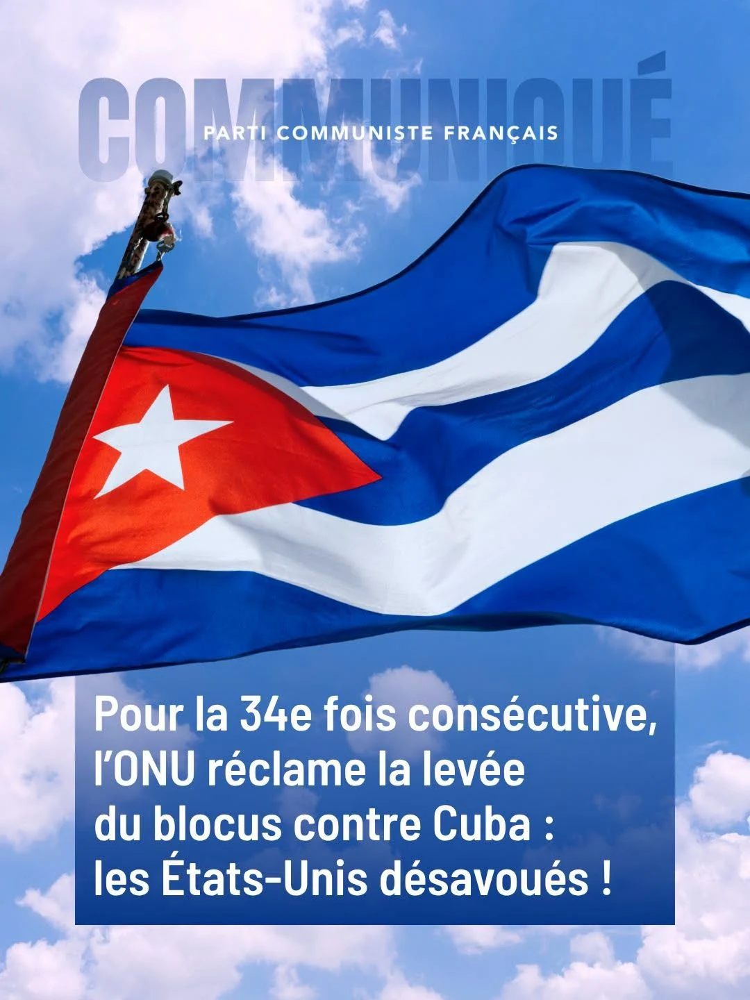

Publication relayée par le PCF 79
« Le blocus tue mais Cuba résiste »
Date indiquée par Facebook · 29 octobre 2026
Texte de la publication · PCF national et PCF - monde
🇨🇺 Le blocus tue mais Cuba résiste. Pour la 34e fois consécutive, l’ONU réclame sa levée.
📢 Les États-Unis doivent entendre cette exigence ! Le PCF appelle à renforcer la solidarité avec le peuple cubain et à mettre fin à ce blocus criminel.
🔗 Retrouvez notre communiqué complet en commentaire.
Repères éditoriaux
Nous relayons la publication du PCF et de PCF Monde sur le vote à l’ONU et l’appel à renforcer la solidarité avec le peuple cubain.

Sources
PCF national et PCF - monde · fil Facebook · relais du PCF 79 · FB-1452268863753029
À lire aussi · Journée internationale de la paix. Le texte national dans le relevé